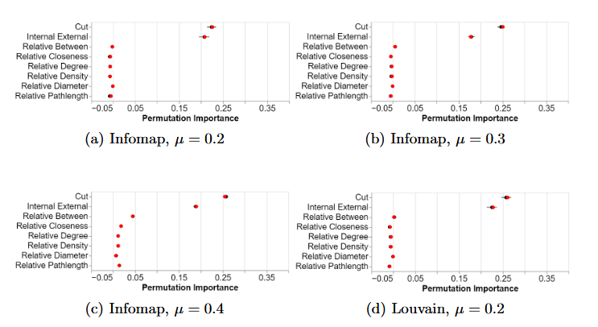

Selecting Informative Features for Post-hoc Community Explanation
(opens in new tab)
Venue. COMPLEX NETWORKS (2022)
Materials.
DOI(opens in new tab)
PDF(opens in new tab)
Abstract. Community finding algorithms are complex, often stochastic algorithms used to detect highly-connected groups of nodes in a graph. As with “black-box” machine learning models, these algorithms typically provide little in the way of explanation or insight into their outputs. In this research paper, inspired by recent work in explainable artificial intelligence (XAI), we look to develop post-hoc explanations for community finding, which are agnostic of the choice of algorithm. Specifically, we propose a new approach to identify features that indicate whether a set of nodes comprises a coherent community or not. We evaluate our methodology, which selects interpretable features from a longlist of candidates, in the context of three well-known community finding algorithms.
Link to this page: